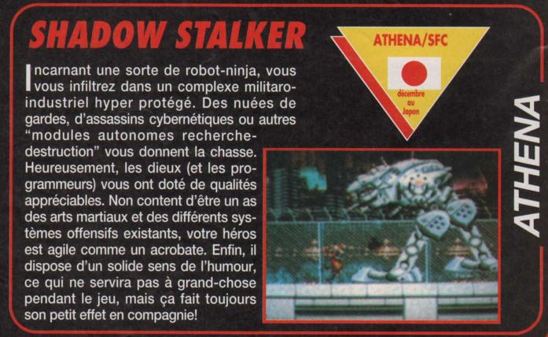

SNES - Shadow Stalker
 :::. Por Gigacom
:::. Por Gigacom
Sabe aqueles
jogões que fazem todo mundo ficar babando e seco de vontade pra
jogar, e que depois simplesmente somem? Pois é, Shadow Stalker
é um desses. Na pele (ou carcaça de metal, sei lá que bicho é aquele ) de um carinha com visual invocado, a sua missão (que sabe Deus qual é
) de um carinha com visual invocado, a sua missão (que sabe Deus qual é ) tem que ser cumprida passando por cima de tudo quanto é robo que aparecer no caminho.
) tem que ser cumprida passando por cima de tudo quanto é robo que aparecer no caminho.
...
...
...
Tá, a
história não convenceu, mas quem ligava para o enredo do
jogo quando tinha 7 anos? O que importava era se divertir . A
observar pelas poucas imagens disponiveis hoje do jogo, dava a entender
que a coisa seria muito boa, digna de grandes jogos, mas morreu
subitamente, assim como tantos outros que foram engavetados sem muita
razão
. A
observar pelas poucas imagens disponiveis hoje do jogo, dava a entender
que a coisa seria muito boa, digna de grandes jogos, mas morreu
subitamente, assim como tantos outros que foram engavetados sem muita
razão .
.
Ha pouco para se falar desse jogo, não se tem noticia dele desde 93 quando foi anunciado o seu desenvolvimento pela softhouse Athena. A rom, até o momento não foi parar na internet, o que impede uma melhor analise do beta do jogo (ou até mesmo o game completo!). Nas imagens logo abaixo dá para ver um pouco melhor como seria o jogo:

Scan de uma revista em inglês...

Scan de uma revista em francês. Saudade do cursinho de linguas que não pude completar ...
...
Tá, não sei que lingua é essa, mas deu pra entender que o estilo do jogo lembraria Shinobi.
Acesse o Trombone e comente sobre essa matéria!


Era todo dia, lembro, um sacrilégio
E os estudos? Ah... foda-se o colégio
Ver os novos lançamentos, um privilégio
Ficar de próximo no Street...
ah, que ambiente egrégio!